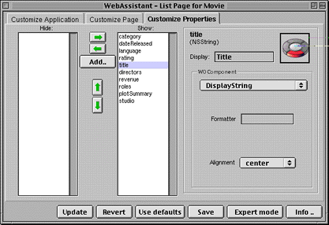

Table of Contents
Table of Contents  Next Section
Table of Contents
Next Section
Table of Contents  Previous Section
Previous Section

The WebAssistant has three displays, each selectable by clicking a tab:
The Web Assistant has two modes, Standard mode and Expert mode. By default the Web Assistant opens in Standard mode, which lets you customize the current page in your application. When you customize a page in Standard mode, the changes apply to all occurrences of that page, and that page only. For example, if you change the order of properties in an edit page for the Movie entity, then any time a Movie edit page is displayed, those changes are in effect. However, the changes don't apply to a Movie query, list, or inspect page; if you want to customize those in the same way, you must do so explicitly.
Using Web Assistant's Expert mode, you can customize any page in the application, regardless of whether it is currently displayed. Thus, by specifying the "*all*" setting in Expert mode, you could change all pages of a given entity at once. For more information, see "WebAssistant Expert Mode".
Table of Contents Next Section